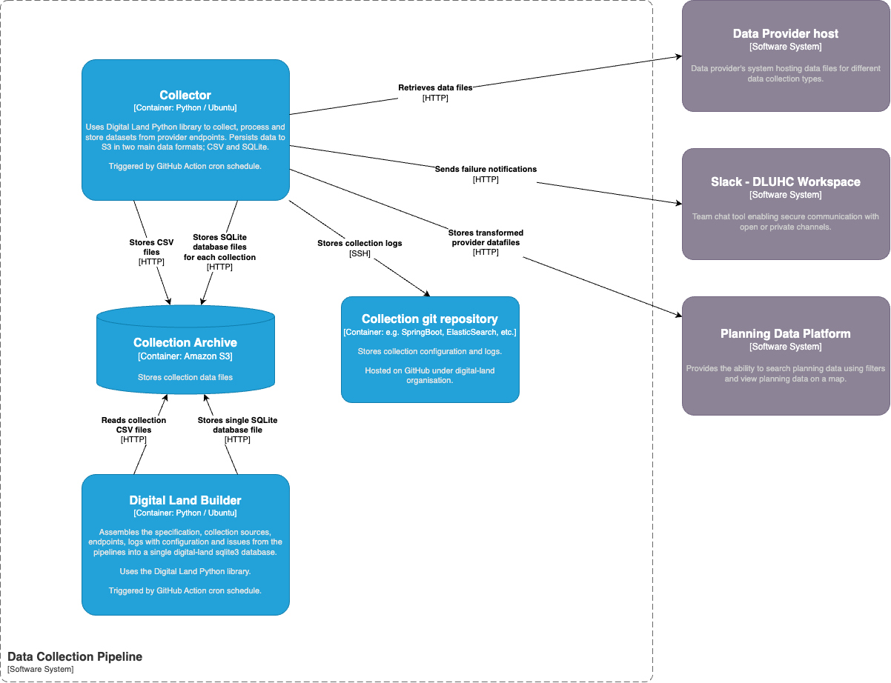
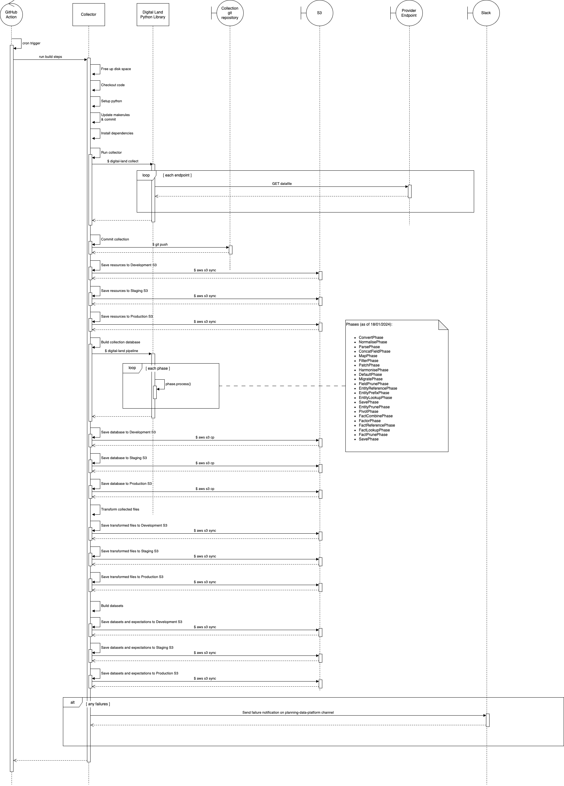

Skip to main content
Planning Data
Beta
Table of contents
Search (via Google)
Search
Planning Data Service
Documentation
Overview
Architecture
Infrastructure
Data Collection
Pipeline run process
Anatomy of a collection repository
Monitoring
Services
User-Facing Services
User-Facing Service Libraries
Datasettee
Data model
Domain Terminology
Processes
List of Datasets
External Links
Live Site
Useful Repositories
Other Documentation
Architecture
Solution design index
Solution design
Solution design - Data Pipelines
Containers
Structure
Interaction
Code
Classes (WIP)
Solution design - Planning Data Platform
Containers
Structure
Solution design - Publish Service
Containers
Structure
Interaction
Solution design archive
Solution design - November 2022
System Context
Architecture Decision Records (ADRs)
1. Record architecture decisions
2. floating-package-dependencies
3. Use the repository-pattern to access a database
4. Implement plugins using pluggy
5. Load external frontend assets first
6. Use Github pages for our content
7. Provide unique IDs for dataset entries
8. Use files for repositories, databases as indexes
9. Use SQLite for data packages
10. Use the Entity-Value-Attribute pattern for our data model
11. Avoid git submodules wherever possible
12. Collection names should be singular
13. Use Github LFS for large git files
14. Use kebab-case for names in data
15. Write new tests at the lowest possible levels
16. Missing entry-dates
17. Use vector tiles to display geographic data on a map
18. Use NodeJS to serve the frontend of the new data validation tool and interact with other APIs
19. Use PyTest and JSONSchema as the Contract validation and testing solution
Infrastructure
Overview
Deploying
An Existing Environment
A New Environment
Lambda functions
Configuration Changes
Add a new application
Add a new background task
RDS autoscaling
Synthetics Canaries
Data Operations
Audience for this document
Key Concepts
Source
Endpoint
Entity
Lookups
Key Processes
Checking Data before loading it onto the platform with Endpoint Checker
Loading data onto the platform
Other Processes
Adding Endpoints To A Collection Manually
Creating a new collection
Adding a new dataset
Ending an endpoint
Retiring a resource
Validating an Endpoint
Validating an Endpoint using the command-line
Reference
Technical Glossary
Key Repositories
Run Book
Outage Procedure
Common Issues
Incident Response History
Planning.data.gov.uk outage - 2023-10-05
National map url ‘dataset’ parameter key changed to ‘layer’ - 2023-10-02
Post incident actions
maptiler started returning 403 errors - 2023-08-16
aws alarms raised for datasette and datasette-tiles canaries - 2023-08-14
Documentation section on planning.data.gov.uk showing error - 2023-06-12
Slowness reported on planning.data.gov.uk - 2023-06-01
Getting error 500 on planning.data.gov.uk - 2023-04-11
All applications on planning.data.gov.uk - 2022-11-22
Working with LPA GIS Systems
Core Concepts
Terminology
Get the servers cabilities
Interesting / useful items in a servers capabilties
Getting info about a Feature Type
Getting some map data for a Feature Type
Useful links
How-to Guides
Python versions on WSL2
Using Python 3.8
Using a later version too
Solution design - Data Pipelines
Containers
Structure

Interaction

Code
Classes (WIP)
{kind=link}
{kind=link}
{kind=link}